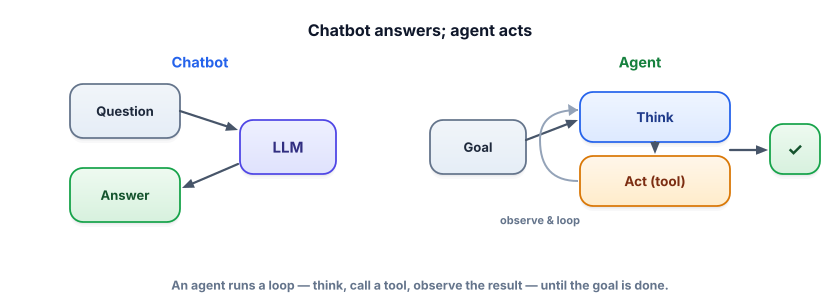

From chatbot to agent
A chatbot answers what you ask. An agent accomplishes a goal — it can look things up, run calculations, call APIs, and take multiple steps, deciding what to do next based on what it sees. This is how LLMs move from “talks well” to “gets things done.”
Why agents exist
You already know the LLM’s limits: it can’t fetch fresh data, do exact math, or affect the outside world — it just predicts text. RAG (Track 3) fixed one limit by feeding it knowledge. Agents fix the rest by giving the model tools it can choose to use, and a loop in which it acts, observes the result, and decides what to do next. “What’s the weather and should I bring an umbrella?” becomes: call a weather API, read the result, then answer. “Summarize the latest sales and email it to my team” becomes: query the database, summarize, send the email — several actions, chosen and sequenced by the model.

An agent is an LLM placed in a loop where it can call tools (functions the model can invoke — a calculator, a search API, your database) and use their results to decide its next step. The repeating cycle of decide an action → run it → observe the result → decide again is the agent loop. Autonomy is how much the agent decides on its own versus following a fixed script — a spectrum, not a switch.
The autonomy spectrum
“Agent” isn’t binary. It’s a dial, and you should turn it only as far as the task needs:
| Level | What it does | Example |
|---|---|---|
| Plain LLM | Answers from the prompt only | “Rewrite this email.” |
| Tool-augmented | Can call one or more tools when needed | “What’s 18% of this invoice?” → calculator |
| Agent loop | Chooses tools over multiple steps toward a goal | “Research X and draft a brief.” |
| Autonomous / multi-agent | Plans, delegates, and runs many steps with little supervision | “Triage these 50 tickets and respond.” |
Every step of autonomy you add multiplies both capability and failure surface: more steps to go wrong, more tools to misuse, more cost to run away. The engineering goal is the least autonomy that solves the task. If a fixed pipeline (RAG → format) works, don’t build a free-roaming agent. We’ll spend Lesson 4.8 on guarding the autonomy you do use.
The smallest real agent: the model decides whether to use a calculator tool, we run it, and feed the result back. This previews tool calling (4.2) and the loop (4.3).
import json, ollama
def calculator(expression):
return str(eval(expression, {"__builtins__": {}})) # toy tool (never eval untrusted input in prod!)
def agent(question):
prompt = f"""You can use a calculator. Reply with JSON:
either {{"tool":"calculator","expression":"..."}} to compute,
or {{"answer":"..."}} if you already know.
Question: {question}"""
step = json.loads(ollama.chat(model="llama3.2",
messages=[{"role":"user","content":prompt}], format="json")["message"]["content"])
if "tool" in step: # the model chose to act
result = calculator(step["expression"]) # we run the tool
return ask(f"The calculator returned {result}. Answer the question: {question}") # feed result back
return step["answer"]
print(agent("What is 23.5% of 1840?")) # model → calculator → "432.4"Notice the shape: the model decides to act (structured output from Track 2.4), your code runs the action, and the result goes back into the model. That decide-act-observe shape is the seed of every agent — the next lessons make each part robust.
- A chatbot answers; an agent accomplishes goals by calling tools in a loop.
- An agent = LLM + tools + a decide-act-observe loop (+ optionally memory and planning).
- Autonomy is a spectrum: plain LLM → tool-augmented → agent loop → autonomous/multi-agent.
- Use the least autonomy that solves the task — more autonomy means more power and more risk.
- The core shape: the model decides an action, your code executes it, the result is fed back.
Your task: “Given an invoice amount, return the total with 8% tax as a number.” It’s the same calculation every time. Should you build an agent?
What turns a chatbot into an agent?
1. Classify each as plain LLM / tool-augmented / agent loop: (a) “translate this paragraph,” (b) “what’s the current Bitcoin price?”, (c) “research three competitors and write a comparison.”
2. In the example, why must your code run the calculator rather than the model computing it directly?
3. Give a task where a fixed pipeline beats an agent, and one where an agent is genuinely necessary.
▸ Show solutions & reasoning
1. (a) plain LLM — pure text transformation, no external info. (b) tool-augmented — needs one live data fetch (a price API), then answer. (c) agent loop — multiple steps (search each competitor, gather, compare, write), with the model deciding what to look up next. Match the machinery to the number and openness of steps.
2. Because the model only predicts text — it doesn’t actually execute anything, and its “mental math” is unreliable (Track 1). Routing the computation to real code gives an exact, trustworthy result, then the model explains it. The division of labor — model decides, code executes — is what makes agents reliable.
3. Fixed pipeline wins: “summarize this document and return JSON” — known steps, no decisions, so a RAG-or-prompt pipeline is simpler and more reliable. Agent necessary: “debug why this failing test breaks and propose a fix” — the steps depend on what each tool reveals (read logs → inspect code → run test → adjust), which can’t be scripted in advance. Agents earn their complexity when the path is unknown until you’re walking it.
It’s tempting to think a better model makes a better agent, and capability does matter. But in practice, reliable agents are won and lost in the scaffolding around the model: the quality of the tool definitions, how cleanly results are fed back, how errors are handled, how the loop is bounded, and how state is tracked across steps. A modest model with excellent tools, tight prompts, and solid guards beats a frontier model wired up carelessly. The model is the reasoner; you build the environment it reasons in.
This reframes the whole track. “Building an agent” is really building a small, well-instrumented system: define tools the model can’t misuse, design a loop that can’t run away, give it the memory it needs and no more, and verify what it does. The model’s job is to choose the next action; your job is to make every possible action safe, observable, and recoverable. Keep that division in mind and agents stop feeling like magic and start feeling like software — which is exactly what makes them shippable.
The foundation of every agent is the ability for the model to call a function reliably. Let’s make that precise and robust. Next: tool / function calling.